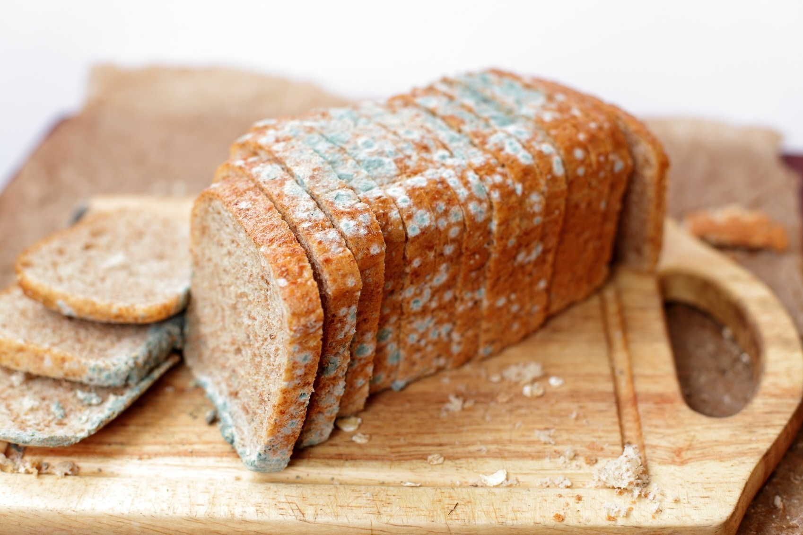
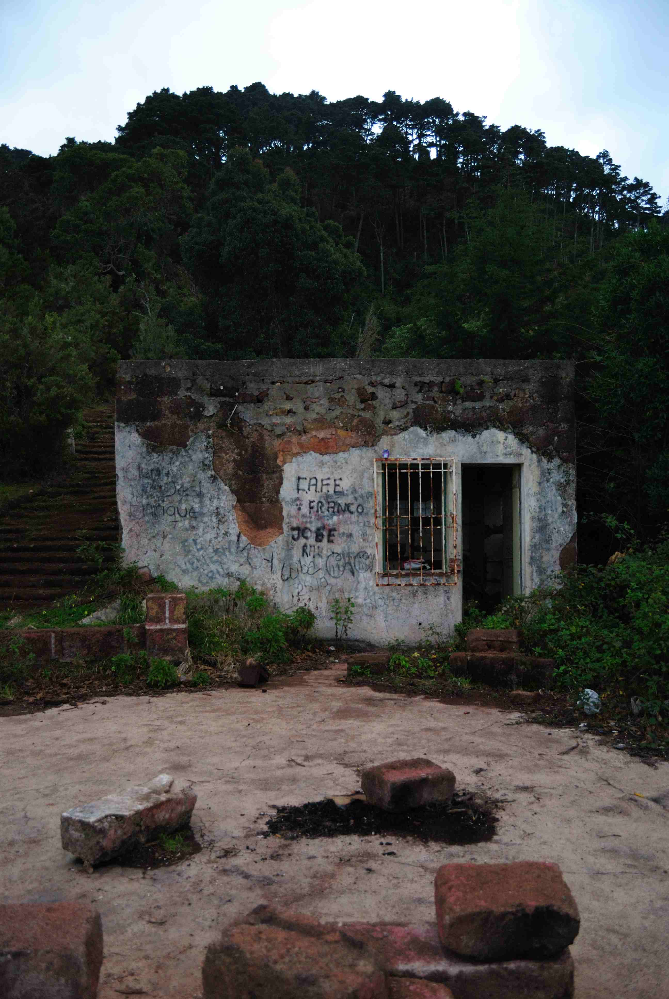
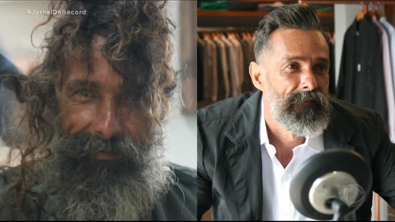
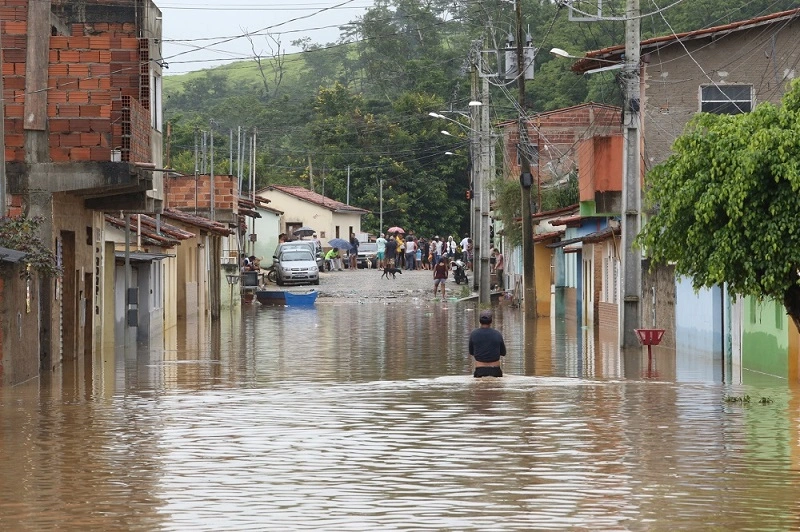

Queda na vertical
China encontra caixa-preta de avião que caiu com 132 pessoas a bordo
Choque da aeronave com o solo provocou incendio. Não há sinais de sobreviventes
Escandalo dos pastores
Denúncias de corrupção derrubam Milton Ribeiro, ministro da Educação

-
Silveira já usou tornozeleira sem análise da Camara: o que diz a lei
ENTENDA: Câmara pode analisar pedido para suspender ação do STF
Daniel Silveira se filia ao PTB, diz assessoria; partido não confirma
-
Economia
Esqueceu como retirar o dinheiro do PIS/Pasep? Veja como fazer
R$ 208 milhões do abono de anos anteriores de 320 mil trabalhadores poderão ser sacador a partir de hoje.
-
Previdência
INSS: Senado altera regras para pagamento de perícias judiciais; veja o que muda
Proposta vai à sanção presidencial.
-
Loterias
Veja dezenas sorteadas da Mega-Sena de R$ 122 milhões
Rateio ainda não foi divulgado.
-
Rock in Rio 2022
Festival anuncia Jessie J no lugar de Joss Stone
Mudança no Palco Sunset ocorre no mesmo dia que se apresentam Corinne Bailey Rae, Gloria Groove e Duda Beat.
-
Caso Will Smith
De expulsão a Oscar cancelado: relembe punições da Academia
Há 2 horas - Em Cinema
-

Pernambuco
Alunos recebem merenda mofada em escola estadual do Recife
Estudantes também denunciaram banheiros quebrados e goteiras nas salas de aula.
Há 2 horas - Em Pernambuco
-
GUERRA NA UCRANIA: Com cessar-fogo, corredor humanitário é aberto em Mariupol; Rússia e Ucrania retomarão negociações no sábado
-

Mulher desacordada é deixada em rua e estuprada por homem em Itaitinga, no Ceará
-

Após passar por transformação em salão de beleza, morador de rua decide mudar de vida: 'Cansei da humilhação'
-
Jornalista Pedro Ferreira, da Secrataria Estadual de Saúde, morre aos 33 anos em Goiânia
-
Ex-vereador é encontrado morto após matar ex-mulher com tiro em Genral Salgado
-

Número de mortos após chuva no RJ chega a 14; Angra tem 5 desaparecidos
Notícias que podem te interessar
VEJA MAIS